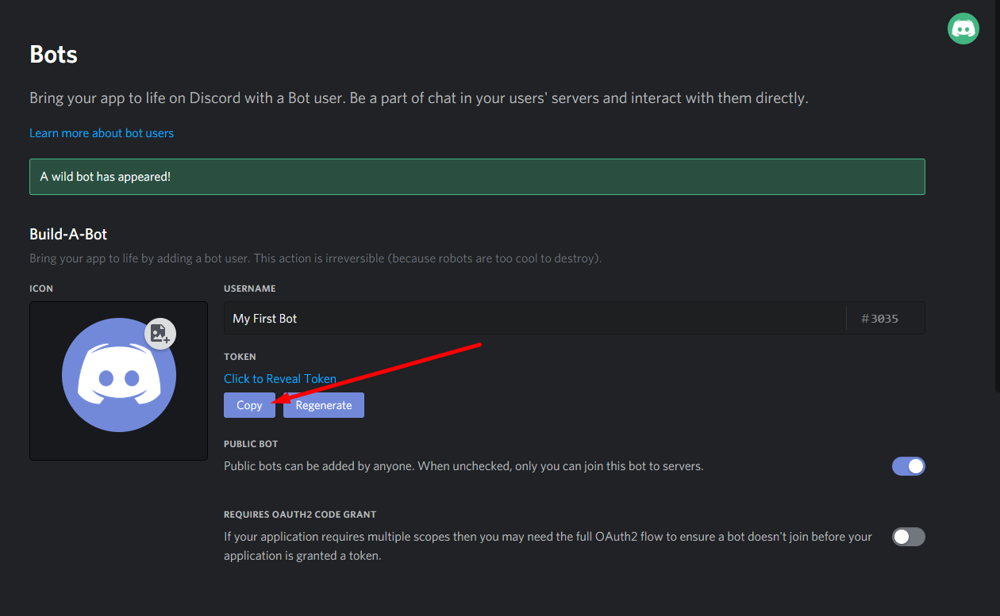

Prerequisites
.NET Runtime
In order to run your bot you need to have a valid installation of a .NET Runtime installed on your target system.
Bot Application
You will need to obtain a secret bot token in order to create your bot.
1. Step Go to the following page: Discord Applications
- Click on "New Application"
- Enter the name of your bot (e.g. My First Bot, You can change it later)
- Click on the Create button
2. Step Fill out your bot information
- Check your bot name
- Enter a bot description that describes your bot
- Choose a cool avatar for your bot. (optional)
- Click on the Bot page
3. Step Get your bot token
- On the bot page click on "Create new Bot"
- Click on "Yes" if a dialog appears.
- Copy your bot token.
WARNING - KEEP YOUR BOT TOKEN PRIVATE!
You should treat your bot token as a password. Do NOT shared your bot token with anyone else! Anyone with your bot token can control your bot. Consider using an external source for your bot token (e.g. environment header, file, etc.).

4. Step Add your bot to a server
- Go to the OAuth2 page
- Select the
botscope - Adjust bot permissions if wanted
- Copy the link and paste it in your browser
- Select a server you want the bot to join
- Click on Authorize
- Verify the captcha (if needed)
5. Step Add BOT_TOKEN environment variable
You should treat your bot token like a password. Make sure nobody has access to it except yourself.
We recommend using environment variables for storing your token:
Linux
Run the following in your favorite shell or command line; or if you want to store your bot token permanently, open your ~/.bashrc file and add the above line to it.
export BOT_TOKEN=<Insert your bot token here>
Windows
setx BOT_TOKEN <Insert your bot token here>
Your bot token should be similar to the following: NzU5MDgxOTg0NjIxODA1Njc4.X24UMA.tdSisrF3eor_i_mh9kakiG4ZpPA
Further steps
Making your bot private
You may want to keep your bot private, then you can un-check the "Public Bot" checkbox. This will make your bot private and only the owner can add the bot to other servers.
Revoke / Regenerate bot token
In the worst case if your bot token gets to publicity you can revoke it when you click "Regenerate". Your old bot token will not be valid anymore (so you have to update your bot token in your code, environment variable, etc.).